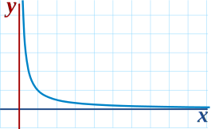

Infinity is a very special idea. We know we can't reach it, but we can still try to work out the value of functions that have infinity in them.
The simplest reason is that Infinity is not a number, it is an idea.
So 1/∞ is a bit like saying 1/ beauty or 1/ tall .
Maybe we could say that 1/∞ = 0, ... but that is a problem too, because if we divide 1 into infinite pieces and they end up 0 each, what happened to the 1?
In fact 1/∞ is known to be undefined.
So instead of trying to work it out for infinity (because we can't get a sensible answer), let's try larger and larger values of x:

| x | 1 x |
| 1 | 1.00000 |
| 2 | 0.50000 |
| 4 | 0.25000 |
| 10 | 0.10000 |
| 100 | 0.01000 |
| 1,000 | 0.00100 |
| 10,000 | 0.00010 |
Now we can see that as x gets larger, 1/ x tends towards 0
We are now faced with an interesting situation:
We want to give the answer "0" but can't, so instead mathematicians say exactly what is going on by using the special word "limit".
The limit of 1/ x as x approaches Infinity is 0
And write it like this:
lim(x→∞)1/x = 0
In other words:
As x approaches infinity, then 1/ x approaches 0